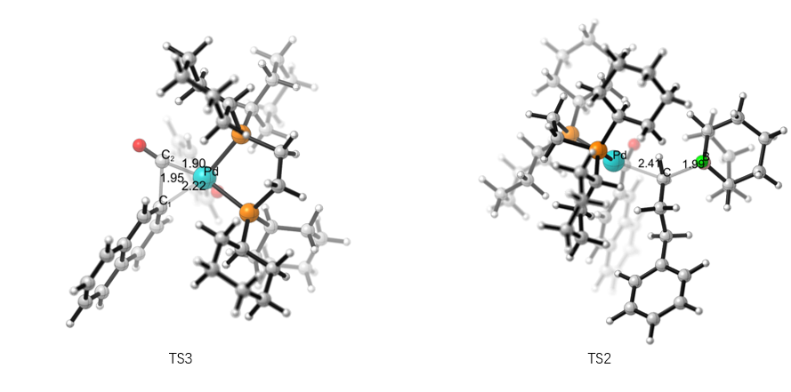
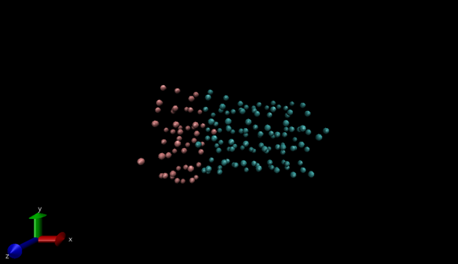

Xiaohan Liu
M.S. Computer Science
Colledge of Engineering & Computer Science
Syracuse University


Colledge of Engineering & Computer Science
Syracuse University
Xiaohan Liu is a M.S. Computer Science student in Syracuse University, expected graduate in May 2021. She is seeking software developer/full-stack engineer/web developer full time positions. She obtained B.S. at Tianjin University in 2019. During her undergraduate, she focused on the interdisciplinarity of Computer Science with Chemistry&Biology. In the summer of 2018, she was elected to be a full scholarship summer school student in Technion-Israel Institute of Technology for course Introdution to Machine Learning.
Beijing PipePlus Technology Co., Ltd.
C/C++ Programming Intern
Computation in Pd-Catalyzed Cross-Coupling Reaction, 12/2018 - 6/2019, Tianjin University
Used Density Functional Theory, computed and optimized geometrically possible intermediates and transition states appearing in the cross-coupling reaction path by computational software Gaussian Determined the explicit mechanism and the reason of ligand regulating the reaction selectivity by computational results. Then better help transitional metal catalyzed cross coupling reaction constructs C-C bond. Discussed several available mechanism and analyzed key intermediate and transitional states’ conformation and energy. This research help not only understand the phenomena of relative experiment but also provide design patterns for follow research.
Computer Simulation of Polymer Chain Conformation, 3/2018 - 6/2018, Tianjin University
Programmed to generate gro file to construct the block polymer chain model, observed the initial morphology of polymer chains in the solvent with different corresponding parameters Set simulation parameters with open source molecule simulation software GROMACS, acquired returned value then analyzed return value, visualized it by VMD, determined the final morphology
